En esta lección se proponen soluciones detalladas de los ejercicios (1) de Drupal. Se recomienda intentar realizarlos primero sin recurrir a estas soluciones.
 No he terminado de actualizar estos ejercicios a la versión Drupal 8.2.
No he terminado de actualizar estos ejercicios a la versión Drupal 8.2.
Drupal es software libre que se distribuye bajo la licencia GPL 2.0 o posterior, en forma de archivo comprimido tar.gz o zip.
La última versión disponible actualmente (febrero de 2017) es la versión 8.2.6 publicada el 01/02/17. Esta lección está escrita para esa versión, aunque las explicaciones seguramente serán válidas para cualquier versión 8.X.
Como en un ejercicio posterior consiste en la actualización de Drupal, se recomienda instalar Drupal 8.2.0 publicada el 05/10/16, que se puede descargar directamente de https://ftp.drupal.org/files/projects/drupal-8.2.0.zip.
Si se quiere descargar otra versión, puede hacerse de la página https://www.drupal.org/node/3060/release (o copiando el enlace anterior en la barra de dirección y cambiar el número de versión manualmente en el enlace).
Si la versión Drupal 8.2.0 ya no está disponible en la web del programa, puede descargarla desde la página de Descarga de aplicaciones.
En estas soluciones, de acuerdo con las recomendaciones de configuración general de estos apuntes, se supondrá que:
Mis documentos > IAW Nombre-de-alumno > Aplicaciones >drupal
http://localhost/webapps/drupal/
En este ejercicio se instalará Drupal en español, utilizando como base de datos MySQL/MariaDB.
Referencias:
En el archivo .htaccess del directorio de Drupal, active la directiva RewriteBase con la dirección de su instalación. Por ejemplo:
# Barto. Indico la dirección de Drupal.
RewriteBase /webapps/drupal
En el archivo php.ini del servidor aumente la directiva max_execution_time, por ejemplo a 60 minutos (3600 segundos), y reinicie el servidor:
; Barto. Aumento tiempo de ejecución para la instalación de Drupal.
max_execution_time = 3600
El archivo php.ini debe tener descomentada la línea siguiente:
extension=php_fileinfo.dll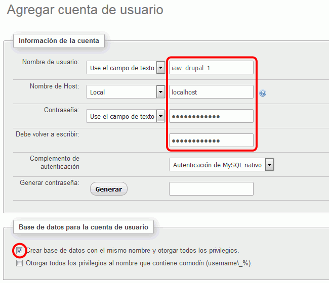
Elija el idioma español.
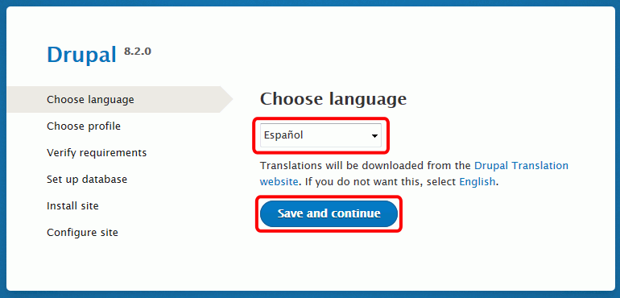
Descargue un certificado para curl (cacert.pem) por ejemplo desde https://curl.haxx.se/docs/caextract.html y cópielo en C:\Windows.
En el archivo php.ini, indique la ubicación del certificado y reinicie el servidor.
; Barto. Incluyo un certificado CACert para Drupal.
curl.cainfo = "C:\Windows\cacert.pem"
Elija el perfil Estándar.
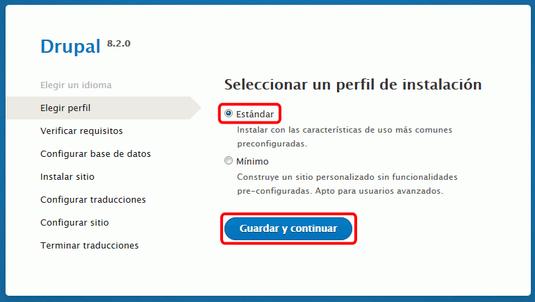
OpCache incluye muchas opciones de configuración que en un servidor de producción deben ajustarse cuidadosamente. En el archivo php.ini, active y configure la extensión zend_opcache y reinicie el servidor.
; Barto. Activo la extensión OPCache para Drupal.
zend_extension=php_opcache.dll
[opcache]
opcache.enable=1
opcache.enable_cli=0
opcache.memory_consumption=64
opcache.interned_strings_buffer=4
opcache.max_wasted_percentage=5
opcache.use_cwd=1
; Barto. Activo la extensión OPCache para Drupal.
zend_extension=php_opcache.dll
[opcache]
opcache.memory_consumption=128
opcache.interned_strings_buffer=8
opcache.max_accelerated_files=4000
opcache.revalidate_freq=60
opcache.fast_shutdown=1
opcache.enable_cli=1
Nombre de la base de datos: iaw_drupal_1
Nombre de usuario de la base de datos: iaw_drupal_1
Contraseña de la base de datos: iaw_drupal_1
Puede que se muestren avisos sobre errores en las traducciones.
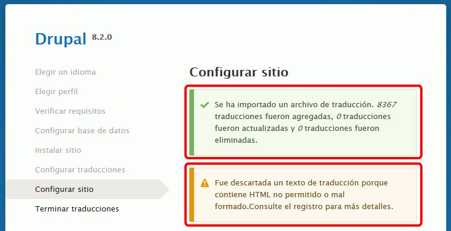
Nombre del sitio web: Mi Drupal
Correo electrónico del sitio: midrupal@example.com
Nombre de usuario: admin
Contraseña: admin
Dirección de correo electrónico: admin@example.com
País predefinido: España
Zona horaria predefinida: Europe/Madrid
Comprobar actualizaciones automáticamente: Marcar
Recibir notificaciones por correo electrónico: Desmarcar
Cuando termine la instalación se mostrará la página de Drupal con el menú de administración en la parte superior:
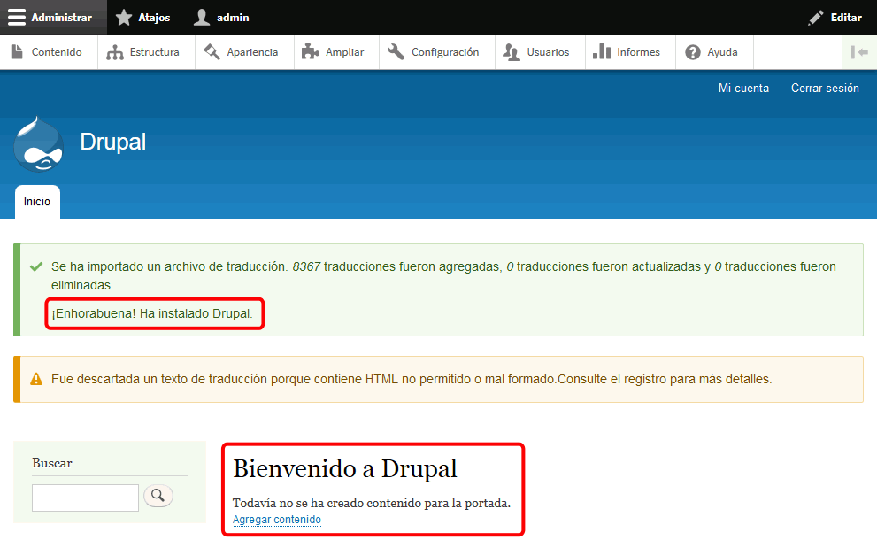
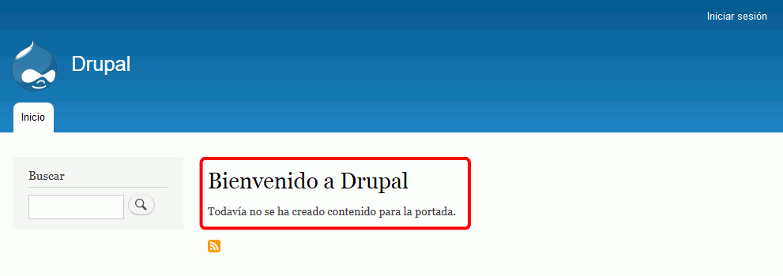
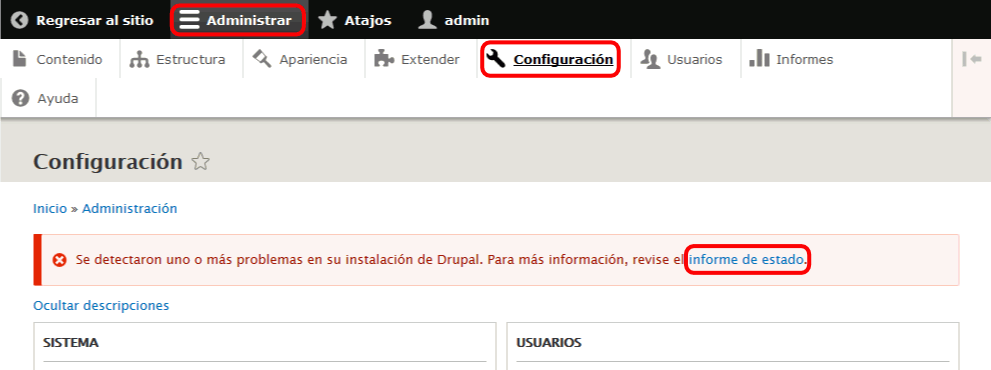
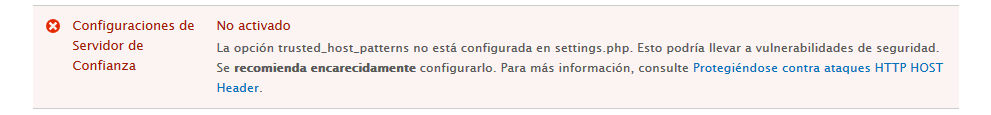
# Barto. Añado localhost como servidor de confianza
$settings['trusted_host_patterns'] = array(
'^localhost$',
);
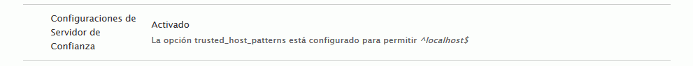
La copia de seguridad manual completa no plantea ninguna dificultad, por lo que no se hace aquí ningún comentario adicional.
En este ejercicio se actualizará Drupal a una versión posterior a la que se instaló inicialmente
Si se ha instalado la versión Drupal 8.0.1, la siguiente versión disponible actualmente (enero de 2016) es la versión 8.0.2 publicada el 6 de enero de 2016.
Referencias:
En Drupal 7, si había una actualización de seguridad disponible, Drupal mostraba un aviso en cualquier página. No sé si Drupal 8 mostrará este aviso cuando haya actualizaciones de seguridad disponibles.

 Actualizar este apartado cuando Drupal 8 publique una actualización de seguridad.
Actualizar este apartado cuando Drupal 8 publique una actualización de seguridad.
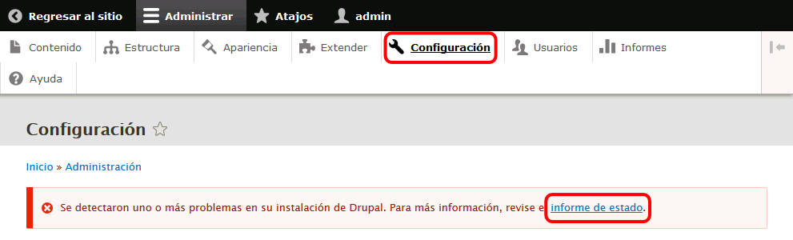

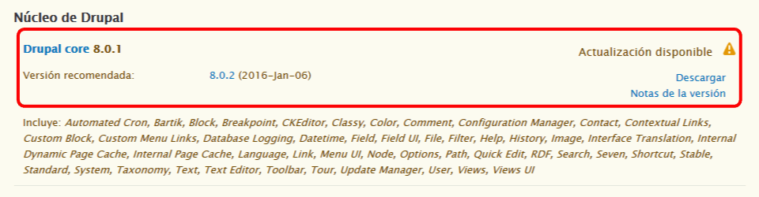
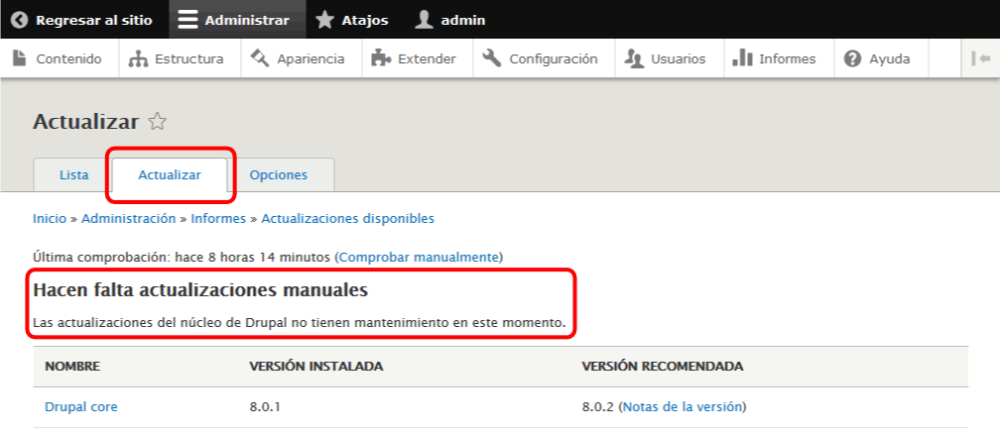
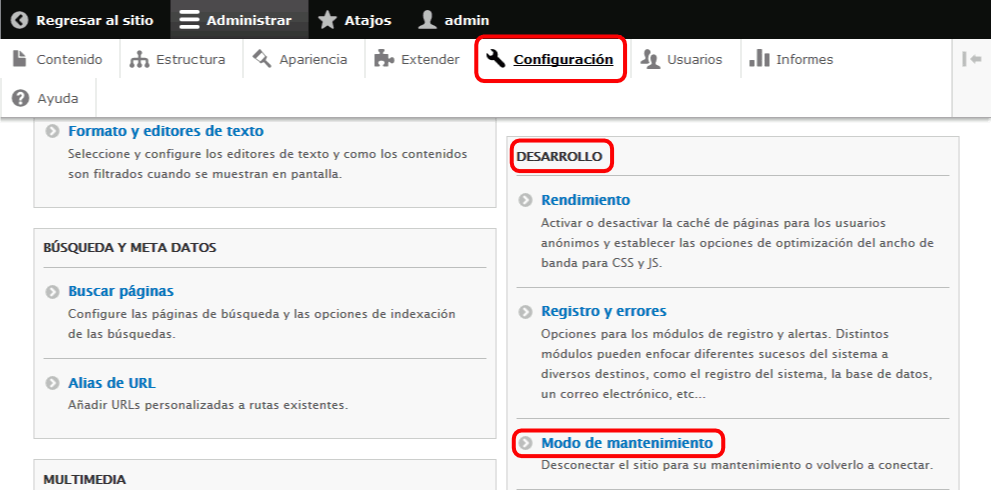
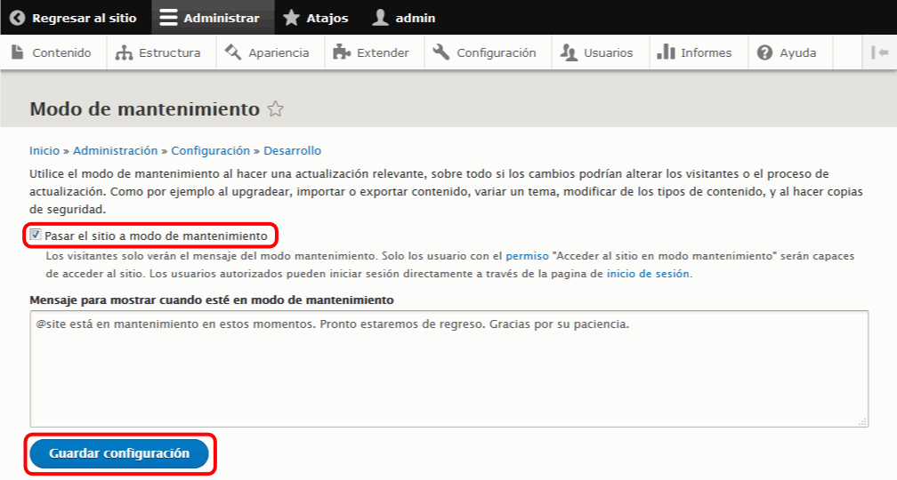
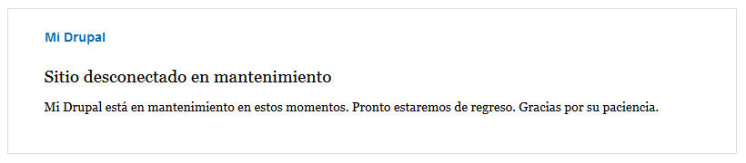
 En Drupal 8, el aviso de sitio en mantenimiento no parece mostrarse en todas las páginas, como sí hacía en Drupal 7. No sé si se debe a OPcaché.
En Drupal 8, el aviso de sitio en mantenimiento no parece mostrarse en todas las páginas, como sí hacía en Drupal 7. No sé si se debe a OPcaché.
 Si hay que volver a entrar como administrador y no se puede hacer clic en Iniciar sesión, se puede hacer escribiendo la dirección drupal/user.
Si hay que volver a entrar como administrador y no se puede hacer clic en Iniciar sesión, se puede hacer escribiendo la dirección drupal/user.
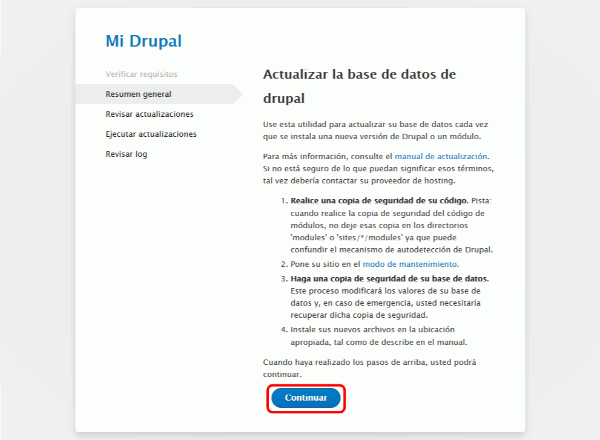
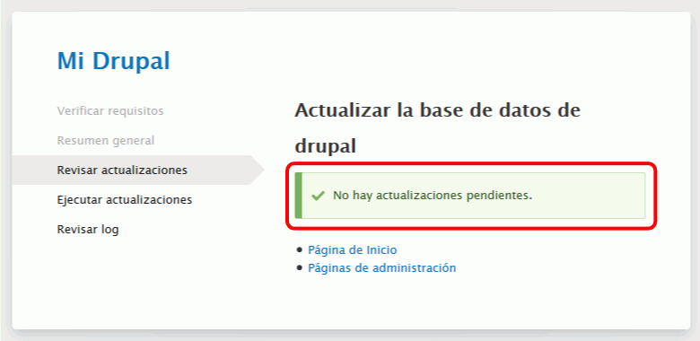
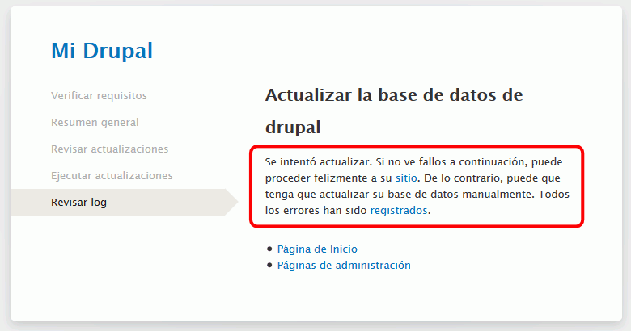
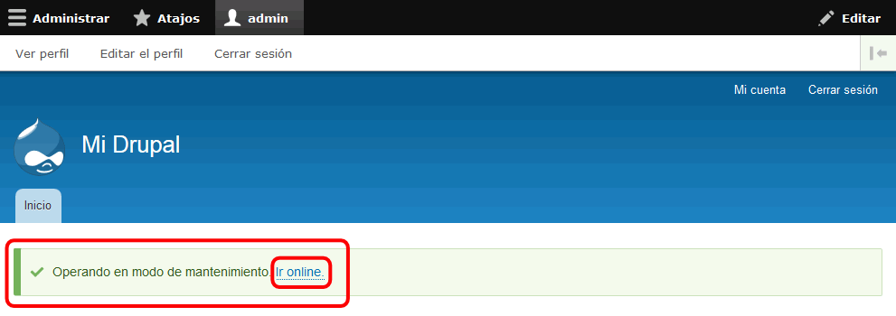
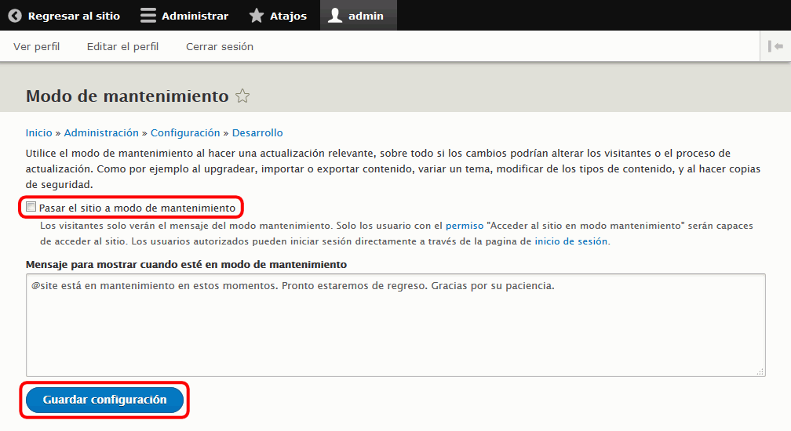

 En Drupal 8 no he podido ver cómo se hacen las actualizaciones de la traducción porque hasta ahora me dice siempre que están actualizadas (aunque el mensaje tiene una errata).
En Drupal 8 no he podido ver cómo se hacen las actualizaciones de la traducción porque hasta ahora me dice siempre que están actualizadas (aunque el mensaje tiene una errata).
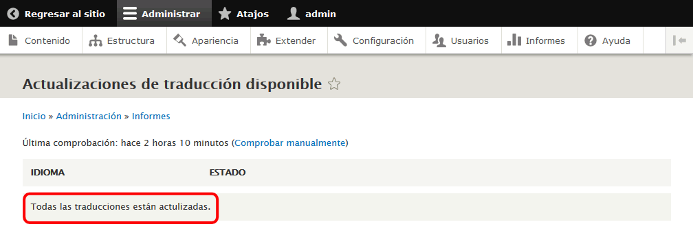
<IfModule alias_module>
...
# 2016-02-01. Alias para acceder a Drupal sin necesidad de poner la ruta completa:
Alias /drupal "ruta"
<Directory "ruta">
Options Indexes FollowSymLinks Includes ExecCGI
AllowOverride All
Require all granted
</Directory>
...
ScriptAlias /cgi-bin/ "C:/xampp/cgi-bin/"
</IfModule>
# Barto. Indico la dirección de Drupal.
RewriteBase /drupal
# Barto. Añado IP localhost como servidor de confianza
$settings['trusted_host_patterns'] = array(
'^localhost$', '^192.168.XXX.YYY$',
);
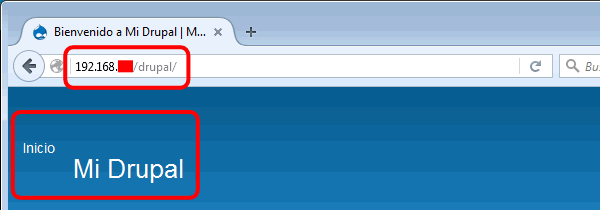
 Si no se muestra el logo de Drupal o los enlaces no son correctos y no le permiten Iniciar sesión, siga los pasos indicados en el apartado Problema: Enlaces incorrectos de esta misma página.
Si no se muestra el logo de Drupal o los enlaces no son correctos y no le permiten Iniciar sesión, siga los pasos indicados en el apartado Problema: Enlaces incorrectos de esta misma página.
 Por completar
Por completar
$databases['default']['default'] = array (
'database' => 'iaw_drupal_2',
'username' => 'iaw_drupal_2',
'password' => 'iaw_drupal_2',
'prefix' => '',
'host' => 'localhost',
...
 Parece que este problema se debe a OPCaché y la solución que se propone aquí "reinicia" OPCaché y así se resuelve el problema.
Parece que este problema se debe a OPCaché y la solución que se propone aquí "reinicia" OPCaché y así se resuelve el problema.
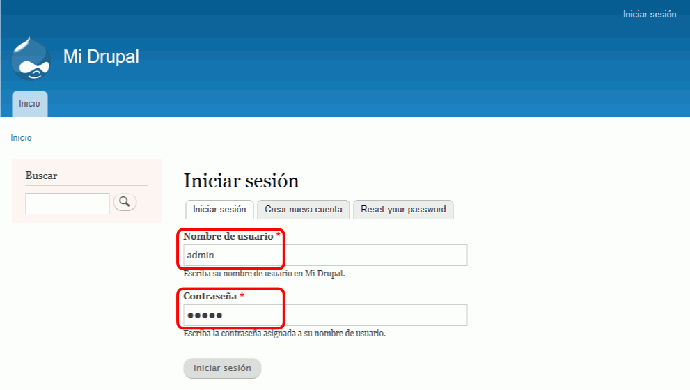
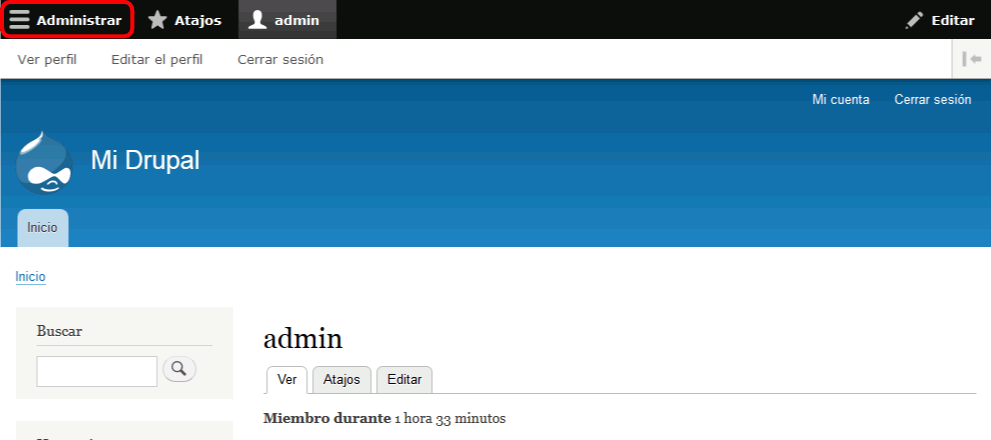
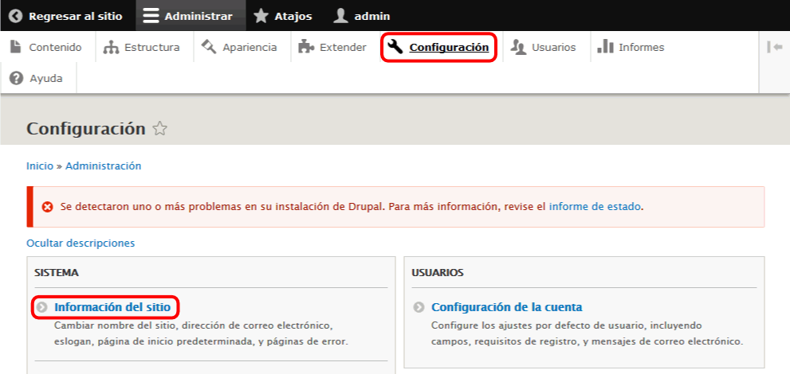
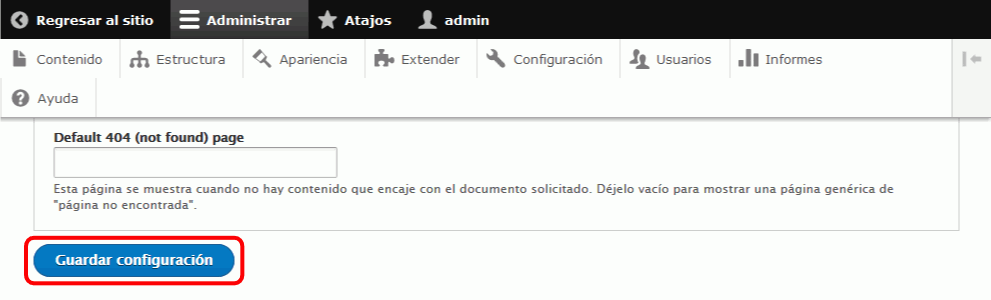
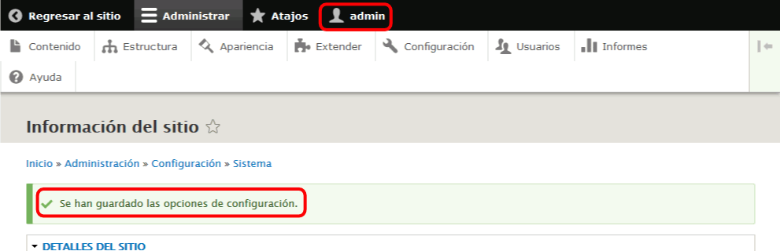
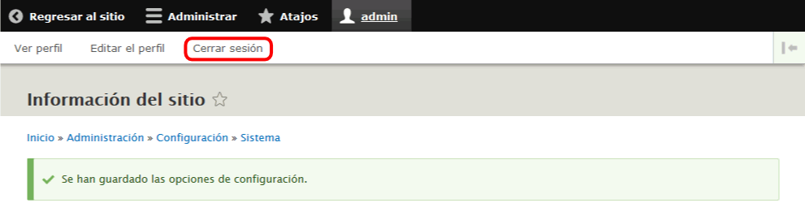